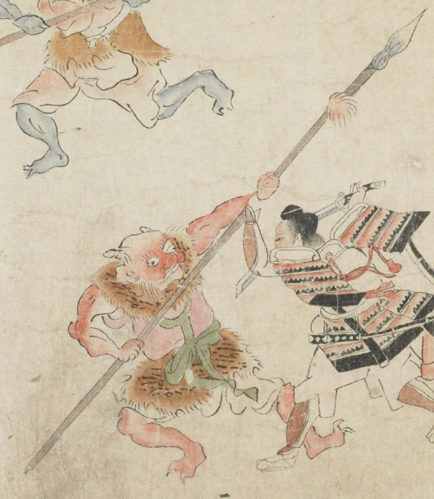

赤い鬼。頭は禿げ、左右の脇に角を1本ずつ生やしている。目玉、鼻、耳が大きい。赤い着物と緑色の帯を身に着け、肩と腰に毛皮を巻きつけている。足指の爪が鋭い。両腕で槍を持ち、右側の武士と戦っている。
著作者：坂本弥一郎徳定／出典：親書誌：U426_nichibunken_0080：伊吹山酒呑童子絵巻；イブキヤマシュテンドウジエマキ／日付：2007／資源識別子：U426_nichibunken_0080_0014_0002
Copyright (c)2010- International Research Center for Japanese Studies, Kyoto, Japan. All rights reserved.